"Christianity and communism are very close spiritually and ideologically. This is a fairly well known concept that has been adopted by various thinkers, from Thomas More to Lev Tolstoy. Few people know that the world's first socialist state was established in Paraguay and was based on the ideas of Catholic Jesuits before Marx created his teachings."
"The "Society of Jesus" - the Jesuit religious order - in the Catholic Church was roughly equivalent to the KGB in the Soviet Union."
The Jews and their Christian cohorts have destroyed ancient records and texts and
have rewritten a fictitious history in compliance with their agenda. They try to claim that some
Paganism was kept to ease the populace into Christianity, but I strongly question
this, as should any intelligent thinking person, as EVERYTHING they have
WAS STOLEN FROM PAGAN RELIGIONS PREDATING CHRISTIANITY. The Jehova's Witnesses know of all the Pagan elements in the Christian religion, but they are deluded to the Nazarene. The Nazarene was stolen and corrupted as well from some 18+ Pagan Gods who represented a concept.
Check out Vatican Square- the Egyptian obelisk in the middle of the Satanic
wheel of the year:
The Judeo/Christian Bible certainly doesn't appear to be as old as it is believed to be, and neither is that foul program they call a "religion." The truth
can be seen in the Gothic cathedrals for one. They were ORIGINALLY PAGAN.
Regardless of what the popular
history books claim, [and many support the Jewish lie of Christianity], it
appears that Christianity arrived on the scene with the Inquisition, especially in Europe. This is nearly identical in every aspect to a communist take over, where mass murder, torture and deprivation of even the most basic of human rights are instituted.
Above quotes taken from "Pravda" [The main Communist Party Newspaper and leading newspaper of the former Soviet Union]
LIKE THE JEWS, THE CHRISTIAN RELIGION HAS NOTHING OF ITS OWN!!
Here is another one of the ceiling of the Vatican Staircase- note the design of the Runic Galdr staves, yet the Druids and other
Pagan priests were mass murdered by the inquisition; the penalty for using Runes or even having knowledge of Runes was automatic death:
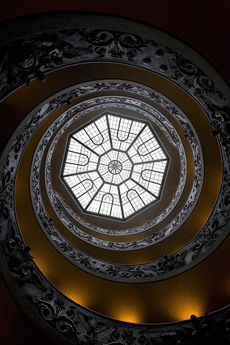
Note all of the Egyptian Gods in the Vatican Museum. If one cares to do the necessary research, it is obvious that nearly everything the Vatican has, has been STOLEN. Egypt is condemned in the Judeo/Christian Bible, and yet, if you read through everything on this website and do more research, it is apparent just how much the Judeo/Christian religion has STOLEN and corrupted from Egypt! These gods wound up in what is known as "the Goetia" in the Jewish written grimoires of blasphemy.
Satan's kingdom was stolen from him!!!!!!!
| 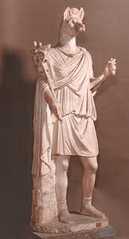 ANUBIS | 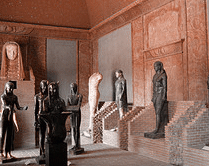 EGYPTIAN GODS IN THE "HALL OF STATUES" | 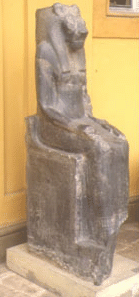 SEKHMET |
More photos of Pagan Gods in the Vatican:
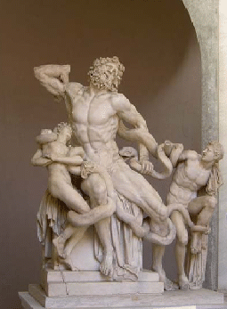
Apollo [Many images of Apollo, such as the one below were passed off as the Nazarene]
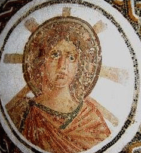
Many images passed off and assumed to be the Nazarene contain a male figure with a halo either with the rays as shown in the above photo, or four quadrants depicting the crown and temple chakras. People have been
Indoctrinated to believe these are of the Nazarene, when in reality, all these are of is a model of a human male with his kundalini ascended.
This is a concept!
This concept was stolen from Pagan Gods and is of Satan- the risen kundalini is what is termed to be "Raising the Devil" and is what manifests in the halo seen in so many old paintings.
Once everyone understands the real meaning of all of those symbols, the veil is dropped and the Jews can no longer pull off their bullshit. This is the main reason the Judeo/Christian Bible threatens anyone who studies the occult or practices anything of the occult with "burning in a lake of fire."
Paintings in the catacombs, which date back to the 3rd and 4th centuries CE, have this same male image. Some images are of are Marduk, some are of Apollo and other Pagan Gods. The book "The Unknown Catacomb" is interesting and reveals much about the Pagan art seen in the catacombs.
Now, here are the so-called "Christian Burial Grounds" aka as the
"Catacombs:"
Here is some image labeled as a saint- in reality, the SHEPHERD WAS STOLEN
FROM HERMES, AKA AS THOTH:
Click Here
Note the four quarters again.
Here is another typical painting of which everyone is told it is "Paul." It is only an image of a man:
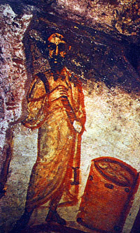
It certainly does not have the name of the man on or near the painting.
People are sheep, most believe whatever they are told without question, and are incessantly warned to "trust" and "have faith."
As for the images with the lamb, the lamb represents Aries and when the Sun is in Aries, this is the best time to begin the great work of alchemy and has nothing whatsoever to do with Christianity.
Look at this deadbeat Jewish asshole and his replica of the Egyptian Pharaoh's
Headdress:
SHAME ON HIM!!!!!!!!!!!!!!!!!!!!!!!!!!!!!!!!!!!!!!!!!!!
The PAGAN GREEN MAN, is seen in cathedrals all over Europe:
| 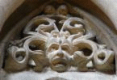 | 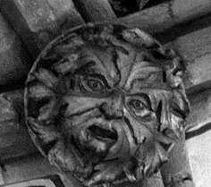 |
Gargoyles, which are lesser Demons are also seen lining nearly every major cathedral in Europe:
| 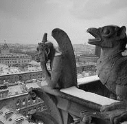 | 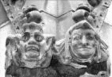 |
This statue located in Strasbourg cathedral appears to be an Assyrian genie:

There is so much more and it is endless. Many history texts call these "three great religions" meaning Judaism, Christianity, and Islam. Now, if they are so great and so original, why is it they have NOTHING of their own???? Islam won't even allow the human figure to be painted. This conforms to the communist agenda of removing history and knowledge from the general populace so people can be disposable slaves.
That was then, this is now- HISTORY IS BEING DESTROYED AND REWRITTEN WITH LIES!!
{kind=link}